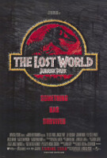

Jurassic-Park
FILMES DA SAGA JURASSIC PARK


JURASSIC PARK: O O MUNDO PERDIDO
The Lost World: Jurassic Park (no Brasil, Jurassic Park 2 O Mundo perdido; em Portugal, O Mundo Perdido: Jurassic park) é um filme estadunidense de 1997 de ficção científica aventura, dirigido por Steven Spielberg, sendo o segundo da franquia Jurassic Park.
O filme foi produzido por Gerald R. Molen e Colin Wilson. O roteiro foi escrito por David Koepp, baseado no romance The Lost World, de Michael Crichton. O filme é estrelado por Jeff Goldblum, Julianne Moore, Vince Vaughn, Pete Postlethwaite, Richard Schiff, Arliss Howard, Thomas F. Duffy, Vanessa Lee Chester e Richard Attenborough.

Jurassic Park III (No Brasil, Jurassic Park 3 e em Portugal, Parque Jurássico III) é um filme estadunidense de ficção científica e aventura lançado originalmente em 18 de julho de 2001 nos cinemas estadunidenses.
É a continuação de The Lost World: Jurassic Park, de 1997. Foi dirigido por Joe Johnston e produzido por Steven Spielberg, Kathleen Kennedy e Larry J. Franco. Este filme, faz parte da franquia Jurassic Park, sendo o terceiro filme desta. Foi o primeiro da saga que não foi dirigido por Steven Spielberg.
JURASSIC PARK III
Jurassic Park III (No Brasil, Jurassic Park 3 e em Portugal, Parque Jurássico III) é um filme estadunidense de ficção científica e aventura lançado originalmente em 18 de julho de 2001 nos cinemas estadunidenses.
É a continuação de The Lost World: Jurassic Park, de 1997. Foi dirigido por Joe Johnston e produzido por Steven Spielberg, Kathleen Kennedy e Larry J. Franco. Este filme, faz parte da franquia Jurassic Park, sendo o terceiro filme desta. Foi o primeiro da saga que não foi dirigido por Steven Spielberg.

JURASSIC WORLD
Jurassic World (no Brasil Jurassic World: O Mundo dos Dinossauros; em Portugal Mundo Jurássico) é um filme estadunidense de ficção científica , aventura, e ação dirigido por Colin Trevorrow[5].
É o quarto filme da franquia Jurassic Park, e foi produzido pela Universal Pictures em parceria com a Amblin Entertainment e com a Legendary Pictures. O longa teve seus efeitos especiais feitos pela Industrial Light & Magic (CGI) e pela Legacy FX (animatrônicos).[6]
PRÊMIOS
| Ano | categoria | fabricante |
| 1944 | Melhor filme | Venceu |
| 1944 | Melhor direção | Venceu |
| 1944 | Melhor figurino | Indicado |
| 1944 | Melhor escritor | Venceu |
JURASSIC PAGE -O seu canal de informações sobre Jurassic Park